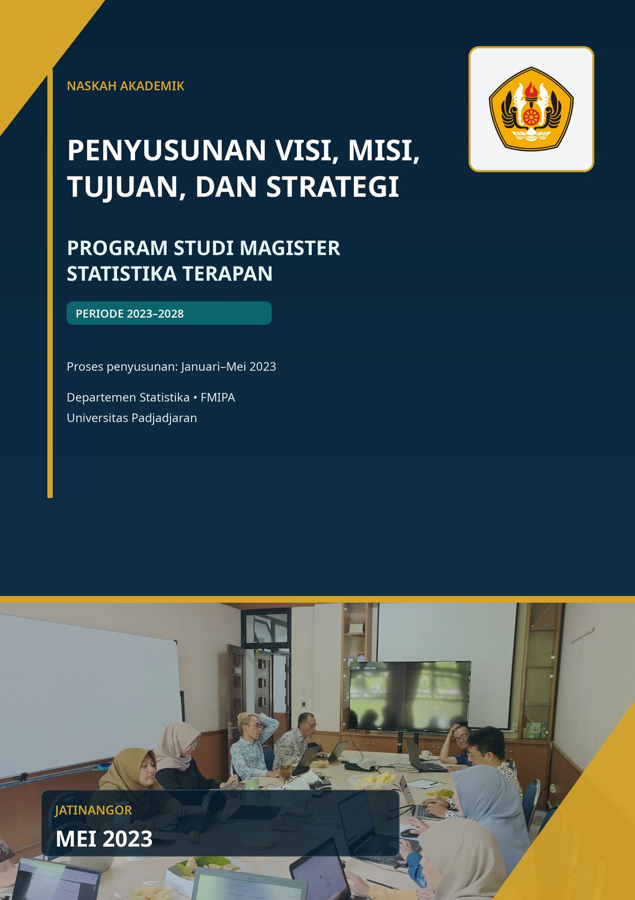
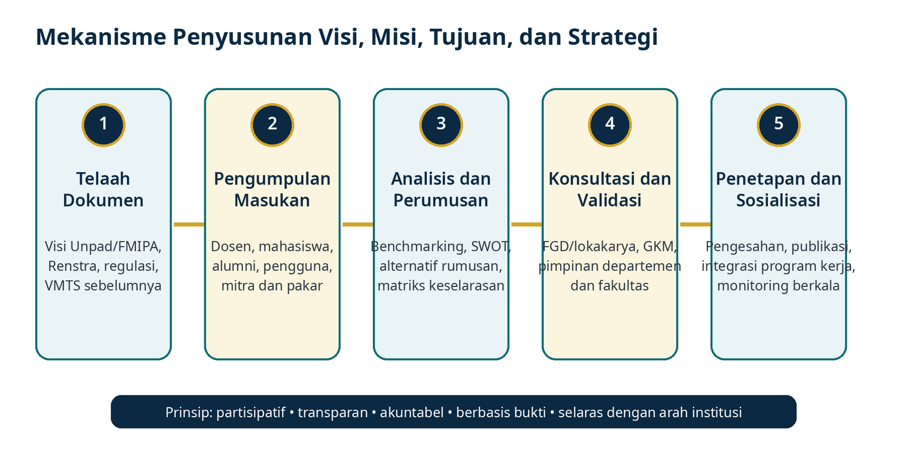
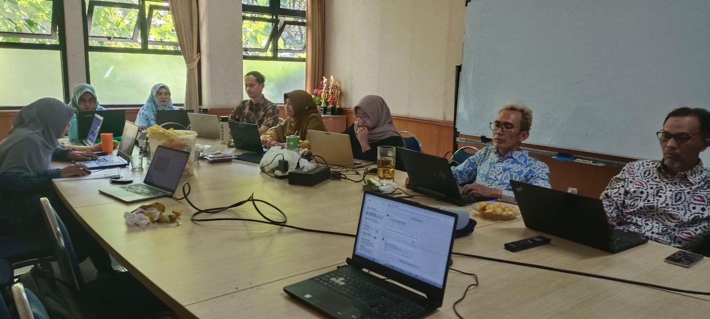
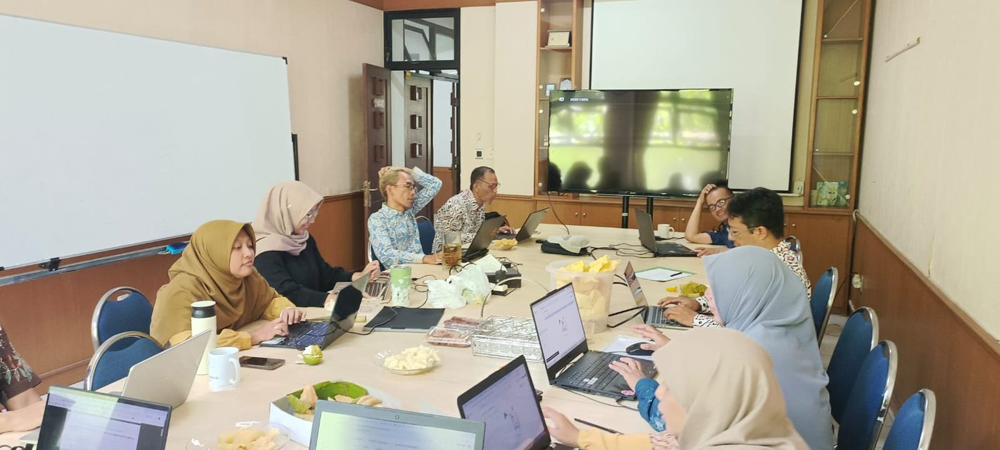
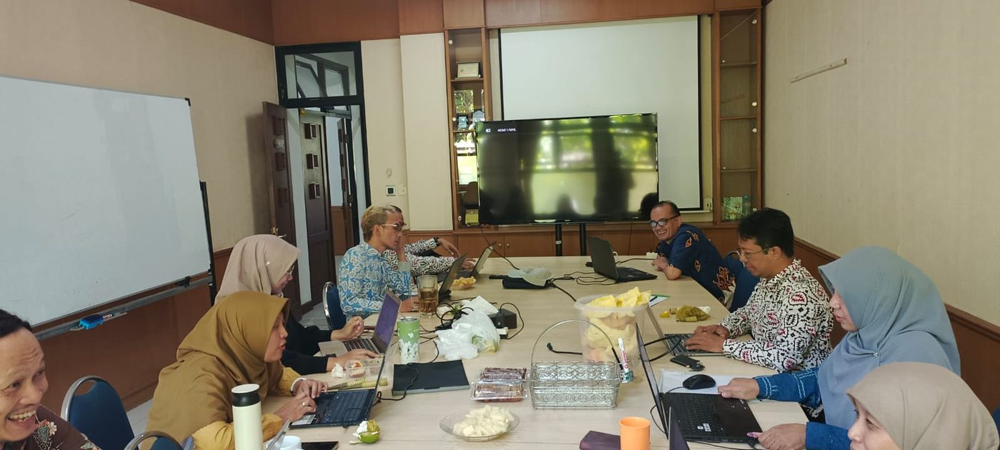

LEMBAR PENGESAHAN
NASKAH AKADEMIK PENYUSUNAN VISI, MISI, TUJUAN, DAN
STRATEGI
PROGRAM STUDI MAGISTER STATISTIKA TERAPAN 2023–2028
Status Penetapan Nomor Surat Keputusan Departemen: [diisi sesuai SK Departemen]. Tanggal penetapan: [perlu dilengkapi berdasarkan dokumen asli]. |
|---|
Dokumen ini disusun sebagai landasan akademik dan bukti proses penyusunan VMTS Program Studi Magister Statistika Terapan FMIPA Universitas Padjadjaran untuk periode 2023–2028. Rumusan visi dan misi dalam dokumen ini mengikuti rumusan resmi yang dipublikasikan pada laman program studi.
Disusun oleh, Dr. I Gede Nyoman Mindra Jaya, M.Si. |
Diperiksa oleh, Dr. Irlandia Ginanjar, M.Si. |
Disahkan oleh, [Nama Dekan dan NIP perlu dilengkapi] |
|---|---|---|
| Tanggal: __________________ | Tanggal: __________________ | Tanggal: __________________ |
TIM PENYUSUN
Susunan tim berikut dicantumkan berdasarkan daftar personel yang disampaikan bersama dokumen kerja. Nomor, tanggal, pembagian peran, dan nomenklatur jabatan dalam Surat Keputusan Departemen perlu dicocokkan dengan naskah SK asli sebelum dokumen ditandatangani.
| No. | Nama | Kedudukan dalam Dokumen | Status Verifikasi |
|---|---|---|---|
| 1 | Dr. I Gede Nyoman Mindra Jaya, M.Si. | Tim Penyusun | Sesuai daftar personel yang disampaikan |
| 2 | Yudhie Andriyana, Ph.D. | Tim Penyusun | Sesuai daftar personel yang disampaikan |
| 3 | Dr. Bertho Tantular | Tim Penyusun | Sesuai daftar personel yang disampaikan |
| 4 | Budhi Handoko, Ph.D. | Tim Penyusun | Sesuai daftar personel yang disampaikan |
| 5 | Dr. Irlandia Ginanjar, M.Si. | Tim Penyusun | Sesuai daftar personel yang disampaikan |
| 6 | Dr. Anindya Apriliyanti Pravitasari, M.Si. | Tim Penyusun | Sesuai daftar personel yang disampaikan |
| 7 | Dr. Yusep Suparman, M.Sc. | Tim Penyusun | Sesuai daftar personel yang disampaikan |
Catatan administratif Lampiran salinan SK Departemen, daftar hadir, notulen, serta berita acara finalisasi perlu ditempatkan pada arsip bukti apabila tersedia. Dokumen ini menyediakan matriks dan format pelengkap untuk memudahkan finalisasi. |
|---|
KATA PENGANTAR
Puji syukur ke hadirat Tuhan Yang Maha Esa atas tersusunnya Naskah Akademik Penyusunan Visi, Misi, Tujuan, dan Strategi Program Studi Magister Statistika Terapan FMIPA Universitas Padjadjaran periode 2023–2028. Dokumen ini disusun untuk menjelaskan landasan, metodologi, proses, hasil perumusan, strategi implementasi, serta mekanisme monitoring dan evaluasi VMTS program studi.
Penyusunan dilaksanakan dengan memperhatikan arah pengembangan Universitas Padjadjaran dan FMIPA, ketentuan pendidikan tinggi yang berlaku pada periode penyusunan, pedoman penjaminan mutu, perkembangan ilmu statistika dan sains data, serta kebutuhan pemangku kepentingan. Proses Januari–Mei 2023 direkonstruksi secara sistematis berdasarkan dokumen awal, pedoman internal, dan dokumentasi kegiatan yang tersedia. Informasi yang belum didukung bukti primer diberi catatan verifikasi dan tidak dinyatakan sebagai fakta yang telah final.
Terima kasih disampaikan kepada pimpinan fakultas dan departemen, pengelola program studi, dosen, tenaga kependidikan, mahasiswa, alumni, pengguna lulusan, mitra, dan seluruh pihak yang memberikan masukan. Naskah ini diharapkan menjadi rujukan tata kelola, penyusunan program kerja, evaluasi mutu, dan pemenuhan bukti akreditasi.
Jatinangor, Mei 2023
Ketua Tim Penyusun
Dr. I Gede Nyoman Mindra Jaya, M.Si.
RINGKASAN EKSEKUTIF
Naskah akademik ini mendokumentasikan dasar pemikiran dan proses penyusunan VMTS Program Studi Magister Statistika Terapan untuk periode 2023–2028. Penyusunan berangkat dari kebutuhan untuk memastikan bahwa orientasi program studi selaras dengan arah institusi, memenuhi prinsip penjaminan mutu, responsif terhadap perkembangan keilmuan, dan relevan dengan kebutuhan masyarakat serta pengguna lulusan.
Rumusan Visi Menjadi pusat pendidikan Magister Statistika yang unggul dalam pendidikan dan riset, diakui secara internasional, serta memberikan dampak nyata bagi masyarakat, khususnya dalam bidang statistika bisnis industri, statistika sosial, aktuaria, biostatistik, dan sains data. |
|---|
Visi tersebut dijabarkan melalui empat misi yang mencakup penyelenggaraan pendidikan magister, pelaksanaan penelitian yang berdampak, pengembangan kerja sama nasional dan internasional, serta publikasi ilmiah bereputasi. Keterkaitan antara visi, misi, tujuan, strategi, dan indikator dibangun melalui matriks keselarasan agar implementasi dapat ditelusuri dan dievaluasi.
Proses penyusunan Januari–Mei 2023 dibagi ke dalam lima tahap: persiapan; evaluasi dan pengumpulan informasi; perumusan; konsultasi dan penyempurnaan; serta finalisasi, penetapan, dan sosialisasi. Karena dokumen sumber tidak memuat seluruh tanggal, jumlah peserta, dan keluaran rapat secara lengkap, kronologi dalam naskah ini merupakan rekonstruksi institusional yang harus dipadankan dengan SK, notulen, daftar hadir, instrumen survei, dan berita acara asli.
menetapkan rumusan VMTS sebagai arah pengembangan program studi;
mengintegrasikan VMTS ke dalam kurikulum, penelitian, pengabdian kepada masyarakat, kerja sama, kemahasiswaan, dan tata kelola;
menggunakan siklus PPEPP untuk monitoring dan evaluasi;
menyimpan bukti proses dan implementasi dalam repositori dokumen yang terkendali; dan
melakukan peninjauan berkala atau lebih awal apabila terjadi perubahan strategis yang material.
CATATAN STATUS DAN VERIFIKASI DOKUMEN
Naskah ini telah disusun dengan prinsip kehati-hatian. Pernyataan faktual hanya didasarkan pada dokumen yang tersedia, sumber resmi institusi, dan dokumentasi foto yang diunggah. Untuk mencegah terbentuknya bukti yang tidak sahih, data administratif yang belum tersedia ditandai secara eksplisit.
| Komponen | Status | Tindak Lanjut |
|---|---|---|
| Rumusan visi dan misi | Tersedia | Mengikuti dokumen VMTS dan laman program studi. |
| Daftar tim penyusun | Tersedia | Tujuh nama dicantumkan sesuai daftar yang disampaikan. |
| Nomor dan tanggal SK Departemen | Belum tersedia | Wajib dilengkapi dari SK asli. |
| Tanggal setiap rapat Januari–Mei 2023 | Belum lengkap | Kronologi disajikan per bulan; tanggal spesifik perlu diverifikasi. |
| Jumlah peserta dan daftar hadir | Belum tersedia | Format lampiran disediakan. |
| Notulen dan berita acara | Belum tersedia | Format lampiran disediakan. |
| Dokumentasi foto | Tersedia | Tiga foto digunakan dengan keterangan yang tidak mengidentifikasi individu. |
| Data survei pemangku kepentingan | Belum tersedia | Matriks dan instrumen disediakan untuk pengisian berdasarkan arsip. |
Peringatan penggunaan Sebelum ditetapkan sebagai dokumen resmi, lakukan verifikasi akhir terhadap SK, nama dan gelar, tanggal kegiatan, bukti keterlibatan pemangku kepentingan, serta kewenangan penandatangan. Hindari mengganti penanda verifikasi dengan data perkiraan. |
|---|
DAFTAR ISI
LEMBAR PENGESAHAN i
TIM PENYUSUN ii
KATA PENGANTAR iii
RINGKASAN EKSEKUTIF iv
CATATAN STATUS DAN VERIFIKASI DOKUMEN v
BAB I PENDAHULUAN 1
1.1 Latar Belakang 1
1.2 Urgensi Penyusunan 1
1.3 Tujuan Penyusunan 1
1.4 Manfaat 1
1.5 Ruang Lingkup 2
1.6 Sistematika Penulisan 2
BAB II LANDASAN PENYUSUNAN 3
2.1 Landasan Filosofis 3
2.2 Landasan Yuridis 3
2.3 Landasan Sosiologis 4
2.4 Landasan Akademik dan Keilmuan 4
2.5 Landasan Institusional 4
2.6 Perkembangan Lingkungan Strategis 4
BAB III PROFIL DAN KONDISI PROGRAM STUDI 5
3.1 Sejarah Singkat 5
3.2 Posisi Program Studi dalam Struktur Institusi 5
3.3 Sumber Daya Manusia 5
3.4 Mahasiswa dan Alumni 5
3.5 Kurikulum dan Proses Pembelajaran 5
3.6 Penelitian dan Pengabdian kepada Masyarakat 5
3.7 Kerja Sama 6
3.8 Karakteristik dan Kekhasan 6
3.9 Tantangan dan Peluang Pengembangan 6
BAB IV METODOLOGI PENYUSUNAN VISI DAN MISI 7
4.1 Prinsip Penyusunan 7
4.2 Pendekatan 7
4.3 Sumber Data dan Informasi 7
4.4 Metode Pengumpulan Masukan 8
4.5 Analisis Dokumen dan Benchmarking 8
4.6 Forum Konsultasi dan Validasi 9
4.7 Pengelolaan Bukti 9
BAB V TAHAPAN PENYUSUNAN JANUARI–MEI 2023 10
5.1 Kerangka Kronologis 10
5.2 Januari 2023: Persiapan 10
5.3 Februari 2023: Evaluasi dan Pengumpulan Informasi 10
5.4 Maret 2023: Perumusan 11
5.5 April 2023: Konsultasi dan Penyempurnaan 11
5.6 Mei 2023: Finalisasi, Penetapan, dan Sosialisasi 12
BAB VI ANALISIS LINGKUNGAN STRATEGIS 13
6.1 Analisis Internal 13
6.2 Analisis Eksternal 13
6.3 Analisis SWOT 13
6.4 Perkembangan Statistika, Sains Data, dan Artificial Intelligence 13
6.5 Kebutuhan Statistika Bidang Kesehatan 13
6.6 Kebutuhan Pemerintah, Industri, dan Masyarakat 14
6.7 Implikasi Strategis 14
BAB VII RUMUSAN VISI DAN MISI 15
7.1 Rumusan Visi Resmi 15
7.2 Makna Kata Kunci Visi 15
7.3 Rumusan Misi Resmi 15
7.4 Keterkaitan Misi dengan Visi 16
7.5 Keselarasan Institusional 16
BAB VIII TUJUAN, STRATEGI, DAN INDIKATOR PENCAPAIAN 17
8.1 Tujuan Program Studi 17
8.2 Strategi Pencapaian 17
8.3 Indikator dan Arah Target 17
8.4 Tahapan Pencapaian 2023–2028 18
BAB IX SOSIALISASI DAN IMPLEMENTASI 19
9.1 Mekanisme Sosialisasi 19
9.2 Media Sosialisasi 19
9.3 Integrasi dalam Tridharma dan Tata Kelola 19
9.4 Pengukuran Pemahaman 19
BAB X MONITORING, EVALUASI, DAN PENINJAUAN 20
10.1 Kerangka PPEPP 20
10.2 Indikator Evaluasi 20
10.3 Periode dan Penanggung Jawab 20
10.4 Umpan Balik dan Peninjauan 20
BAB XI PENUTUP 22
11.1 Kesimpulan 22
11.2 Rekomendasi 22
11.3 Tindak Lanjut 22
DAFTAR PUSTAKA 23
LAMPIRAN 24
DAFTAR TABEL
Tabel 1.1 Ruang lingkup naskah akademik 2
Tabel 2.1 Dasar yuridis dan relevansinya 3
Tabel 3.1 Ringkasan kondisi dan kebutuhan pengembangan program studi 6
Tabel 4.1 Pemetaan pemangku kepentingan dan bentuk kontribusi 8
Tabel 4.2 Sumber data, metode analisis, dan keluaran 8
Tabel 5.1 Rekonstruksi tahapan penyusunan Januari–Mei 2023 10
Tabel 6.1 Analisis SWOT Program Studi Magister Statistika Terapan 13
Tabel 6.2 Implikasi analisis lingkungan terhadap rumusan VMTS 14
Tabel 7.1 Definisi operasional kata kunci visi 15
Tabel 7.2 Keterkaitan misi dengan unsur visi 16
Tabel 7.3 Keselarasan visi program studi dengan arah institusi 16
Tabel 8.1 Tujuan, strategi, dan indikator pencapaian 17
Tabel 8.2 Tahapan pencapaian visi 2023–2028 18
Tabel 9.1 Matriks integrasi visi dan misi dalam kegiatan program studi 19
Tabel 10.1 Matriks monitoring dan evaluasi VMTS 20
Tabel L.1 Matriks masukan pemangku kepentingan dan tindak lanjut 25
Tabel L.2 Matriks bukti pendukung proses penyusunan 26
DAFTAR GAMBAR
Gambar 1.1 Mekanisme penyusunan visi, misi, tujuan, dan strategi 7
Gambar 5.1 Dokumentasi pembahasan internal penyusunan VMTS, 2023 (sudut pandang 1) 11
Gambar 5.2 Dokumentasi pembahasan internal penyusunan VMTS, 2023 (sudut pandang 2) 11
Gambar 5.3 Dokumentasi pembahasan internal penyusunan VMTS, 2023 (sudut pandang 3) 12
BAB I PENDAHULUAN
1.1 Latar Belakang
Visi, misi, tujuan, dan strategi merupakan perangkat fundamental dalam tata kelola program studi. Visi menggambarkan keadaan masa depan yang hendak diwujudkan, misi menjelaskan mandat utama untuk mencapainya, tujuan menerjemahkan hasil yang diharapkan, sedangkan strategi mengarahkan pemanfaatan sumber daya dan program kerja. VMTS yang baik bukan sekadar pernyataan normatif, tetapi menjadi kerangka pengambilan keputusan yang terhubung dengan kurikulum, penelitian, pengabdian kepada masyarakat, kerja sama, sumber daya, kemahasiswaan, dan sistem penjaminan mutu.
Program Studi Magister Statistika Terapan menghadapi lingkungan yang berubah cepat. Digitalisasi menghasilkan data dengan volume, variasi, dan kecepatan yang semakin tinggi; metode statistika berinteraksi semakin erat dengan komputasi, sains data, dan artificial intelligence; sementara pemerintah, industri, layanan kesehatan, dan masyarakat menuntut analisis yang akurat, transparan, etis, serta berdampak. Kondisi tersebut menuntut rumusan VMTS yang mampu menjaga identitas keilmuan statistika sekaligus membuka ruang inovasi dan penerapan lintas bidang.
Naskah awal VMTS 2023–2028 telah memuat sejarah program studi, pemikiran strategis, dasar kebijakan, analisis SWOT, program strategis, rumusan visi dan misi, tujuan pendidikan, capaian pembelajaran lulusan, profil lulusan, serta strategi pengembangan. Pedoman internal penyusunan visi dan misi memberikan mekanisme yang meliputi pembentukan tim, koordinasi, penyusunan rancangan, konsultasi, lokakarya, validasi, pengesahan, dan sosialisasi. Naskah akademik ini mengembangkan kedua dokumen tersebut menjadi narasi yang lebih komprehensif dan siap digunakan sebagai bukti tata kelola dan akreditasi.
1.2 Urgensi Penyusunan
memastikan keselarasan vertikal dengan arah Universitas Padjadjaran dan FMIPA;
memperjelas kekhasan program magister dalam pengembangan dan penerapan statistika;
menjadi dasar penyusunan kurikulum berbasis capaian, peta jalan riset, dan program pengabdian;
menjamin keterlacakan strategi, indikator, evaluasi, dan tindak lanjut;
menguatkan partisipasi pemangku kepentingan internal dan eksternal; serta
menyediakan bukti yang sistematis untuk penjaminan mutu dan akreditasi.
1.3 Tujuan Penyusunan
Tujuan umum penyusunan naskah adalah menghasilkan landasan akademik yang sahih, sistematis, dan dapat diverifikasi bagi penetapan serta implementasi VMTS Program Studi Magister Statistika Terapan periode 2023–2028. Secara khusus, naskah ini bertujuan menjelaskan landasan filosofis, yuridis, sosiologis, akademik, dan institusional; mendokumentasikan metodologi dan tahapan penyusunan; menganalisis lingkungan strategis; menetapkan rumusan visi dan misi; menyusun tujuan, strategi, dan indikator; serta merancang mekanisme sosialisasi, implementasi, monitoring, evaluasi, dan peninjauan.
1.4 Manfaat
Bagi pengelola program studi, naskah ini menjadi dasar penyusunan rencana kerja dan pengambilan keputusan. Bagi dosen, tenaga kependidikan, dan mahasiswa, dokumen ini menjadi rujukan untuk memahami arah akademik dan prioritas pengembangan. Bagi alumni, pengguna lulusan, dan mitra, dokumen ini memberikan gambaran mengenai kompetensi dan dampak yang hendak dihasilkan. Bagi unit penjaminan mutu dan asesor, naskah ini menyediakan jejak proses dan matriks bukti yang dapat ditelusuri.
1.5 Ruang Lingkup
Tabel 1.1 Ruang lingkup naskah akademik
| Aspek | Cakupan |
|---|---|
| Landasan | Filosofis, yuridis, sosiologis, akademik, dan institusional. |
| Proses | Metodologi, pemangku kepentingan, tahapan Januari–Mei 2023, validasi, dan bukti. |
| Substansi | Visi, misi, tujuan, strategi, indikator, dan tahapan pencapaian. |
| Implementasi | Sosialisasi, integrasi dalam Tridharma, kerja sama, kemahasiswaan, dan tata kelola. |
| Penjaminan mutu | Monitoring, evaluasi, PPEPP, umpan balik, serta mekanisme peninjauan. |
| Lampiran | Matriks, instrumen, format notulen, daftar hadir, dan daftar bukti. |
1.6 Sistematika Penulisan
Naskah terdiri atas sebelas bab. Bab I memuat pendahuluan; Bab II landasan penyusunan; Bab III profil dan kondisi program studi; Bab IV metodologi; Bab V tahapan penyusunan; Bab VI analisis lingkungan strategis; Bab VII rumusan visi dan misi; Bab VIII tujuan, strategi, dan indikator; Bab IX sosialisasi dan implementasi; Bab X monitoring, evaluasi, dan peninjauan; serta Bab XI penutup. Bagian akhir memuat daftar pustaka dan lampiran operasional.
BAB II LANDASAN PENYUSUNAN
2.1 Landasan Filosofis
Pendidikan tinggi diselenggarakan untuk mengembangkan potensi manusia, memajukan ilmu pengetahuan dan teknologi, serta memberikan kemaslahatan bagi masyarakat. Dalam konteks statistika, landasan filosofis menempatkan data bukan hanya sebagai objek komputasi, tetapi sebagai representasi fenomena yang harus dianalisis secara bertanggung jawab. Ketepatan inferensi, keterbukaan asumsi, reproduktibilitas, perlindungan data, keadilan analitik, dan komunikasi ketidakpastian merupakan nilai yang harus mewarnai pendidikan, penelitian, dan praktik profesional lulusan.
Visi program studi menggabungkan keunggulan pendidikan dan riset, pengakuan internasional, serta dampak bagi masyarakat. Ketiga unsur tersebut menegaskan bahwa mutu akademik, jejaring global, dan relevansi sosial harus berkembang secara serempak. Pengakuan internasional tidak diposisikan sebagai tujuan simbolik, melainkan sebagai konsekuensi dari kualitas, integritas, dan kontribusi ilmiah yang konsisten.
2.2 Landasan Yuridis
Tabel 2.1 Dasar yuridis dan relevansinya
| Dasar | Relevansi |
|---|---|
| Undang-Undang Nomor 20 Tahun 2003 tentang Sistem Pendidikan Nasional | Memberikan kerangka tujuan pendidikan nasional dan penyelenggaraan pendidikan yang bermutu. |
| Undang-Undang Nomor 12 Tahun 2012 tentang Pendidikan Tinggi | Menegaskan fungsi pendidikan tinggi, Tridharma, otonomi, penjaminan mutu, relevansi, dan peran masyarakat. |
| Peraturan Presiden Nomor 8 Tahun 2012 tentang KKNI | Menempatkan program magister pada jenjang kualifikasi yang menuntut pengembangan pengetahuan dan pemecahan masalah multidisipliner. |
| Peraturan Pemerintah Nomor 4 Tahun 2014 | Mengatur penyelenggaraan pendidikan tinggi dan pengelolaan perguruan tinggi. |
| Peraturan Pemerintah Nomor 51 Tahun 2015 tentang Statuta Unpad | Menjadi dasar tata kelola Universitas Padjadjaran sebagai perguruan tinggi negeri badan hukum. |
| Permendikbud Nomor 3 Tahun 2020 tentang SN-Dikti | Merupakan standar nasional yang berlaku pada Januari–Mei 2023 dan menjadi acuan pendidikan, penelitian, dan pengabdian. |
| Renstra Universitas Padjadjaran 2020–2024 | Memberikan arah pengembangan institusi, reputasi, inovasi, dan dampak. |
| Renstra FMIPA Unpad 2020–2024 | Menetapkan orientasi fakultas pada keunggulan pendidikan dan riset, rekognisi internasional, dan dampak masyarakat. |
| Pedoman SPMI dan standar mutu Unpad | Memberikan mekanisme PPEPP dan standar visi, misi, serta tujuan. |
| Pedoman dan instrumen akreditasi LAMSAMA | Mendorong keselarasan VMTS, keterlibatan pemangku kepentingan, implementasi, bukti, dan evaluasi. |
Konteks waktu regulasi Permendikbud Nomor 3 Tahun 2020 digunakan karena masih berlaku sepanjang proses Januari–Mei 2023. Perubahan regulasi setelah periode tersebut dapat digunakan untuk evaluasi implementasi, tetapi bukan sebagai dasar historis utama penyusunan. |
|---|
2.3 Landasan Sosiologis
Masyarakat semakin bergantung pada keputusan berbasis data dalam kesehatan, ekonomi, bisnis, industri, sosial, aktuaria, pemerintahan, dan kebijakan publik. Pada saat yang sama, kesenjangan literasi data, kualitas data yang tidak seragam, bias algoritmik, serta penyalahgunaan interpretasi statistik dapat menimbulkan risiko. Program studi perlu menghasilkan lulusan yang tidak hanya menguasai metode, tetapi juga mampu menerjemahkan persoalan substantif, berkolaborasi dengan ahli bidang, dan mengomunikasikan hasil secara jujur serta mudah dipahami.
2.4 Landasan Akademik dan Keilmuan
Statistika modern berkembang pada pertemuan antara teori peluang, inferensi, komputasi, optimisasi, ilmu domain, dan teknologi data. Perkembangan Bayesian computation, causal inference, machine learning, high-dimensional statistics, spatial and spatiotemporal modeling, survival analysis, official statistics, dan responsible AI memperluas ruang lingkup pendidikan magister. Penguatan komputasi perlu tetap didasarkan pada pemahaman asumsi, desain data, ketidakpastian, validasi, dan interpretabilitas.
2.5 Landasan Institusional
Visi FMIPA dalam Renstra 2020–2024 menekankan keunggulan pendidikan dan riset, rekognisi internasional, dan dampak pada masyarakat. Rumusan visi program studi secara eksplisit menurunkan tiga orientasi tersebut, kemudian memberikan kekhasan keilmuan melalui fokus statistika bisnis industri, statistika sosial, aktuaria, biostatistik, dan sains data. Keselarasan ini menjaga hubungan antara mandat institusi dan identitas program studi.
2.6 Perkembangan Lingkungan Strategis
Lingkungan strategis yang dipertimbangkan mencakup transformasi digital, pertumbuhan kebutuhan data scientist dan statistician, penggunaan AI generatif, peningkatan tuntutan publikasi dan kolaborasi internasional, kebutuhan analisis kesehatan berbasis populasi, penguatan statistik resmi, serta pentingnya tata kelola data. Respons program studi perlu bersifat adaptif tetapi tidak reaktif: inovasi kurikulum dan riset harus tetap konsisten dengan kompetensi magister, etika akademik, dan kapasitas sumber daya.
BAB III PROFIL DAN KONDISI PROGRAM STUDI
3.1 Sejarah Singkat
Program Studi Magister Statistika Terapan FMIPA Universitas Padjadjaran didirikan pada tahun 2007 untuk menjawab kebutuhan pengembangan metodologi statistika dan penerapannya pada berbagai bidang. Sejak pendiriannya, program studi mengalami pengembangan kurikulum secara berkala. Evaluasi 2022–2023 diarahkan pada penyesuaian dengan pendidikan berbasis capaian atau Outcome-Based Education (OBE), perkembangan keilmuan, serta kebutuhan akademik dan dunia kerja.
Dokumen awal mencatat kepemimpinan program studi secara berurutan oleh Dr. Septiadi Padmadisastra, Dr. Lienda Noviyanti, M.S., Yudhie Andriyana, Ph.D., dan Dr. I Gede Nyoman Mindra Jaya, M.Si. Informasi periode jabatan perlu dicocokkan dengan keputusan pengangkatan resmi apabila digunakan sebagai bukti akreditasi.
3.2 Posisi Program Studi dalam Struktur Institusi
Program studi berada di bawah FMIPA Universitas Padjadjaran dan secara akademik terkait erat dengan Departemen Statistika. Posisi tersebut memberikan akses pada komunitas keilmuan statistika, kelompok bidang kajian, laboratorium, jaringan alumni, serta kerja sama fakultas dan universitas. Tata kelola VMTS melibatkan hubungan antara program studi, departemen, unit penjaminan mutu, fakultas, dan universitas.
3.3 Sumber Daya Manusia
Kekuatan utama program studi terletak pada dosen dengan keahlian beragam dalam statistika teoritis dan terapan, pengalaman penelitian, publikasi, konsultasi, serta jejaring nasional dan internasional. Pengembangan ke depan memerlukan pemetaan beban kerja, regenerasi keahlian, peningkatan kolaborasi lintas disiplin, dan dukungan tenaga kependidikan yang mampu mengelola layanan akademik berbasis digital.
3.4 Mahasiswa dan Alumni
Mahasiswa berasal dari latar belakang statistika dan disiplin terkait dengan variasi kemampuan matematis, komputasi, dan pengalaman aplikasi. Keragaman tersebut merupakan peluang untuk pembelajaran multidisipliner, tetapi memerlukan mekanisme penyetaraan kompetensi awal dan pendampingan akademik. Alumni menjadi sumber penting untuk menilai relevansi kompetensi, perkembangan karier, kebutuhan keterampilan, serta reputasi program studi di dunia kerja.
3.5 Kurikulum dan Proses Pembelajaran
Kurikulum perlu memastikan kesinambungan antara fondasi teori, metodologi lanjut, komputasi, riset, komunikasi ilmiah, dan aplikasi. Implementasi OBE mensyaratkan keterhubungan profil lulusan, tujuan pendidikan, capaian pembelajaran, mata kuliah, asesmen, serta evaluasi ketercapaian. Pembelajaran dapat memanfaatkan studi kasus, proyek, data nyata, reproducible workflow, seminar, dan kolaborasi dengan mitra.
3.6 Penelitian dan Pengabdian kepada Masyarakat
Penelitian diarahkan pada pengembangan metode dan penerapan statistika yang memberikan kontribusi ilmiah serta dampak praktis. Pengabdian kepada masyarakat menjadi wahana penerapan kompetensi melalui konsultasi, pelatihan, pengembangan dashboard, evaluasi program, dan pendampingan analitik. Integrasi dengan tesis mahasiswa memperkuat ekosistem riset dan kebermanfaatan.
3.7 Kerja Sama
Kerja sama nasional dan internasional dibutuhkan untuk pertukaran pengetahuan, penelitian bersama, mobilitas dosen dan mahasiswa, akses data, co-supervision, seminar, dan publikasi. Setiap kerja sama perlu memiliki tujuan, keluaran, penanggung jawab, periode, serta bukti evaluasi agar tidak berhenti pada dokumen formal.
3.8 Karakteristik dan Kekhasan
Kekhasan program studi terletak pada pengembangan dan penerapan statistika di bidang bisnis industri, sosial, aktuaria, biostatistik, dan sains data. Fokus tersebut memberikan ruang untuk menggabungkan metodologi dengan masalah nyata, termasuk pengambilan keputusan di bawah ketidakpastian. Dalam implementasi mutakhir, bidang kesehatan dan artificial intelligence dapat diposisikan sebagai tema lintas bidang yang memperkuat, bukan menggantikan, fondasi statistika.
3.9 Tantangan dan Peluang Pengembangan
Tabel 3.1 Ringkasan kondisi dan kebutuhan pengembangan program studi
| Komponen | Potensi | Kebutuhan Pengembangan |
|---|---|---|
| Kurikulum | OBE dan variasi bidang aplikasi | Perlu pemetaan CPL, asesmen, dan pembaruan berkala. |
| SDM | Keahlian dosen beragam | Perlu penguatan kolaborasi, regenerasi, dan pemerataan beban. |
| Mahasiswa | Latar belakang heterogen | Perlu matrikulasi dan sistem pendampingan. |
| Riset | Topik aplikatif dan jejaring tersedia | Perlu konsistensi roadmap, data, publikasi, dan hilirisasi. |
| Internasionalisasi | Peluang kolaborasi dan publikasi | Perlu keluaran terukur dan dukungan bahasa/mobilitas. |
| Tata kelola data | Layanan digital berkembang | Perlu standar data, keamanan, dokumentasi, dan keberlanjutan sistem. |
BAB IV METODOLOGI PENYUSUNAN VISI DAN MISI
4.1 Prinsip Penyusunan
Penyusunan VMTS menggunakan lima prinsip: partisipatif, transparan, akuntabel, berbasis bukti, dan selaras. Partisipatif berarti membuka ruang masukan bagi pemangku kepentingan yang relevan. Transparan berarti kriteria, sumber, dan proses dapat dijelaskan. Akuntabel berarti keputusan dan penanggung jawab dapat ditelusuri. Berbasis bukti berarti rumusan didukung data atau dokumen. Selaras berarti terdapat hubungan vertikal dengan institusi dan horizontal dengan kurikulum serta program kerja.
4.2 Pendekatan
Pendekatan yang digunakan adalah perencanaan strategis berbasis pemangku kepentingan dan analisis lingkungan. Tahapan dimulai dari telaah dokumen, pemetaan pemangku kepentingan, pengumpulan masukan, benchmarking, analisis SWOT, penyusunan alternatif rumusan, konsultasi, validasi, penetapan, dan sosialisasi. Setiap tahap menghasilkan keluaran dan bukti yang spesifik.

Gambar 1.1 Mekanisme penyusunan visi, misi, tujuan, dan strategi
Sumber: Disusun berdasarkan pedoman internal penyusunan visi dan misi Departemen Statistika.
4.3 Sumber Data dan Informasi
Sumber primer ideal meliputi SK tim, notulen, daftar hadir, berita acara, hasil survei, hasil FGD, dan catatan keputusan. Sumber sekunder meliputi regulasi, Renstra, pedoman mutu, dokumen akreditasi, tracer study, evaluasi pembelajaran, laporan penelitian, laporan kerja sama, dan benchmarking. Naskah ini menggunakan sumber yang tersedia dan menandai bukti yang belum ditemukan.
4.4 Metode Pengumpulan Masukan
Tabel 4.1 Pemetaan pemangku kepentingan dan bentuk kontribusi
| Kelompok | Kontribusi yang Diharapkan | Metode |
|---|---|---|
| Internal: pimpinan | Arah institusi, tata kelola, sumber daya, dan kelayakan implementasi. | Rapat/konsultasi dan telaah dokumen. |
| Internal: dosen | Keilmuan, kurikulum, riset, publikasi, dan kebutuhan pengembangan. | Diskusi internal, FGD, dan formulir masukan. |
| Internal: mahasiswa/tendik | Pengalaman pembelajaran, layanan, komunikasi, dan implementasi. | Survei, diskusi, dan evaluasi layanan. |
| Eksternal: alumni | Relevansi kompetensi, transisi kerja, dan perkembangan profesi. | Tracer study, survei, wawancara. |
| Eksternal: pengguna lulusan | Kinerja lulusan dan kebutuhan kompetensi. | Survei pengguna, wawancara, forum mitra. |
| Eksternal: mitra/pakar | Perkembangan disiplin, benchmark, peluang kerja sama, dan validasi. | Lokakarya, konsultasi, benchmarking. |
4.5 Analisis Dokumen dan Benchmarking
Analisis dokumen dilakukan dengan mengidentifikasi mandat, tema strategis, kata kunci, indikator, dan bukti implementasi. Benchmarking tidak dimaksudkan untuk menyalin rumusan institusi lain, melainkan untuk membandingkan struktur kurikulum, fokus keilmuan, profil lulusan, model internasionalisasi, dan praktik penjaminan mutu. Hasil benchmarking harus ditafsirkan sesuai konteks sumber daya dan mandat program studi.
Tabel 4.2 Sumber data, metode analisis, dan keluaran
| Sumber | Metode Analisis | Keluaran |
|---|---|---|
| Regulasi dan Renstra | Analisis isi dan pemetaan tema | Matriks keselarasan institusional. |
| Dokumen VMTS sebelumnya | Evaluasi konsistensi dan relevansi | Isu yang dipertahankan, diperbaiki, atau dipertegas. |
| Tracer study/survei | Ringkasan deskriptif dan analisis tema | Kebutuhan kompetensi dan relevansi lulusan. |
| Benchmark program sejenis | Perbandingan terstruktur | Alternatif praktik baik dan diferensiasi. |
| FGD/wawancara | Koding tema dan konsensus | Masukan, respons tim, dan tindak lanjut. |
| Data kinerja | Analisis tren dan kesenjangan | Indikator, baseline, serta prioritas strategi. |
4.6 Forum Konsultasi dan Validasi
Forum konsultasi dapat berbentuk rapat internal, FGD, lokakarya, uji publik, dan konsultasi kepada pimpinan atau pakar. Validasi dilakukan pada tiga tingkat: validasi substansi keilmuan, validasi keselarasan institusional, dan validasi keterlaksanaan. Rumusan dianggap layak apabila jelas, membedakan visi dari misi, relevan, berorientasi masa depan, dan dapat diterjemahkan menjadi tujuan serta strategi.
4.7 Pengelolaan Bukti
Setiap kegiatan perlu dihubungkan dengan bukti minimal berupa undangan atau agenda, daftar hadir, bahan paparan, notulen, dokumentasi, hasil masukan, keputusan, dan tindak lanjut. Bukti disimpan dengan penamaan baku dan metadata tanggal, penanggung jawab, versi, serta status pengesahan. Matriks bukti pada lampiran membantu memastikan tidak ada klaim yang melebihi dokumen pendukung.
BAB V TAHAPAN PENYUSUNAN JANUARI–MEI 2023
5.1 Kerangka Kronologis
Dokumen sumber menetapkan rentang penyusunan Januari–Mei 2023, tetapi tidak memuat seluruh tanggal dan hasil kegiatan secara rinci. Karena itu, tahap berikut disajikan sebagai rekonstruksi kronologis yang logis berdasarkan pedoman internal. Setiap butir yang akan dijadikan bukti formal harus diverifikasi dengan arsip primer.
Tabel 5.1 Rekonstruksi tahapan penyusunan Januari–Mei 2023
| Waktu | Tahap | Kegiatan Utama | Pihak | Keluaran | Bukti |
|---|---|---|---|---|---|
| Januari 2023 | Persiapan | Pembentukan tim; telaah regulasi, Renstra, VMTS sebelumnya; penyusunan rencana kerja. | Pimpinan, program studi, GKM, tim. | Rencana kerja, daftar sumber, rancangan instrumen. | SK/penugasan, notulen awal [perlu dilengkapi]. |
| Februari 2023 | Evaluasi dan pengumpulan informasi | Evaluasi VMTS; masukan internal/eksternal; benchmarking; telaah tracer study. | Tim, dosen, mahasiswa, alumni, pengguna/mitra sesuai bukti. | Daftar isu, hasil benchmark, ringkasan masukan. | Instrumen, data, notulen [perlu diverifikasi]. |
| Maret 2023 | Perumusan | Analisis SWOT; penyusunan alternatif visi, misi, tujuan, dan strategi. | Tim penyusun dan pihak yang dikonsultasikan. | Alternatif rumusan dan matriks keselarasan. | Draf dan catatan pembahasan. |
| April 2023 | Konsultasi dan penyempurnaan | FGD/lokakarya; uji keselarasan; revisi rumusan; perumusan indikator. | Tim, pimpinan, GKM, stakeholder sesuai bukti. | Draf final substantif dan respons masukan. | Foto tersedia; daftar hadir/notulen perlu dilengkapi. |
| Mei 2023 | Finalisasi, penetapan, sosialisasi | Validasi, pengesahan, publikasi, sosialisasi, dan penetapan monev. | Departemen, fakultas, program studi, sivitas akademika. | Dokumen VMTS 2023–2028 dan rencana implementasi. | SK/berita acara/media sosialisasi [perlu dilengkapi]. |
5.2 Januari 2023: Persiapan
Tahap persiapan memfokuskan pada penetapan mandat, pembentukan tim, identifikasi sumber, dan penyusunan jadwal. Tim menelaah visi dan misi Unpad, FMIPA, serta program studi sebelumnya; menginventarisasi regulasi; dan menyusun daftar data yang diperlukan. Pada tahap ini ditentukan pula prinsip kerja, mekanisme komunikasi, pengendalian versi dokumen, serta pembagian tugas. Nomor dan tanggal SK perlu dimasukkan dari dokumen asli.
5.3 Februari 2023: Evaluasi dan Pengumpulan Informasi
Tahap kedua mengevaluasi kesesuaian rumusan lama dengan perkembangan keilmuan, kebutuhan lulusan, dan arah institusi. Kegiatan ideal mencakup telaah tracer study, evaluasi pembelajaran, survei alumni dan pengguna, serta benchmarking. Dalam dokumen final, hanya pihak yang memiliki bukti kehadiran atau masukan yang boleh dinyatakan telah terlibat; pihak lain ditempatkan sebagai kelompok yang seharusnya dilibatkan pada evaluasi berikutnya.
5.4 Maret 2023: Perumusan
Tim mengelompokkan masukan ke dalam tema keunggulan akademik, riset, rekognisi internasional, dampak masyarakat, fokus bidang aplikasi, kerja sama, publikasi, dan tata kelola. Alternatif rumusan diuji dari segi kejelasan, relevansi, diferensiasi, daya ingat, keterukuran turunan, dan konsistensi istilah. Analisis SWOT digunakan untuk menghubungkan kondisi dengan pilihan strategi.
5.5 April 2023: Konsultasi dan Penyempurnaan
Draf dibahas melalui forum internal dan konsultasi dengan pemangku kepentingan yang dapat diverifikasi. Dokumentasi foto menunjukkan kegiatan pembahasan bersama dengan penggunaan perangkat kerja digital. Foto tidak digunakan untuk mengidentifikasi individu, tanggal spesifik, atau keputusan yang tidak tercantum dalam sumber.

Gambar 5.1 Dokumentasi pembahasan internal penyusunan VMTS, 2023 (sudut pandang 1)
Sumber: Dokumentasi Program Studi Magister Statistika Terapan. Tanggal spesifik perlu diverifikasi.

Gambar 5.2 Dokumentasi pembahasan internal penyusunan VMTS, 2023 (sudut pandang 2)
Sumber: Dokumentasi Program Studi Magister Statistika Terapan. Tanggal spesifik perlu diverifikasi.

Gambar 5.3 Dokumentasi pembahasan internal penyusunan VMTS, 2023 (sudut pandang 3)
Sumber: Dokumentasi Program Studi Magister Statistika Terapan. Tanggal spesifik perlu diverifikasi.
5.6 Mei 2023: Finalisasi, Penetapan, dan Sosialisasi
Tahap finalisasi memastikan konsistensi antara visi, misi, tujuan, strategi, indikator, dan periode pencapaian. Setelah validasi, rumusan ditetapkan melalui kewenangan institusional yang berlaku dan disosialisasikan melalui website, pedoman akademik, kegiatan penerimaan mahasiswa, rapat dosen, orientasi mahasiswa, media visual, serta dokumen kurikulum. Dokumen pengesahan, bukti publikasi, dan hasil pengukuran pemahaman perlu disimpan sebagai satu paket bukti.
BAB VI ANALISIS LINGKUNGAN STRATEGIS
6.1 Analisis Internal
Analisis internal mempertimbangkan kualitas dosen, keragaman keahlian, kurikulum OBE, jaringan kerja sama, pengalaman riset, keterlibatan mahasiswa, sistem layanan akademik, dan budaya mutu. Kekuatan tersebut perlu ditopang oleh pengelolaan data kinerja, pembaruan kurikulum, regenerasi keahlian, peningkatan publikasi, serta dukungan sarana komputasi dan administrasi.
6.2 Analisis Eksternal
Faktor eksternal meliputi meningkatnya permintaan kompetensi analitik, perkembangan AI dan otomasi, kebutuhan statistik resmi, data kesehatan, pengambilan keputusan berbasis bukti, persaingan program magister, tuntutan rekognisi internasional, perubahan regulasi, dan keterbatasan akses data. Program studi perlu membedakan antara tren yang bersifat sementara dan perubahan struktural yang memerlukan respons kurikulum atau riset.
6.3 Analisis SWOT
Tabel 6.1 Analisis SWOT Program Studi Magister Statistika Terapan
| Dimensi | Temuan | Respons Strategis |
|---|---|---|
| Kekuatan | Kurikulum OBE; dosen dan riset; jejaring; variasi bidang aplikasi; keterlibatan mahasiswa. | Mengembangkan pendidikan berbasis riset, integrasi proyek, dan kolaborasi lintas bidang. |
| Kelemahan | Internasionalisasi belum merata; publikasi perlu ditingkatkan; implementasi sistem dan bukti belum seragam. | Penguatan dukungan publikasi, mobilitas, dokumentasi, dan pengelolaan kinerja. |
| Peluang | Permintaan data science; AI; kebutuhan analisis kesehatan, industri, sosial, aktuaria, dan pemerintah. | Program tematik, microcredential/pelatihan, riset bersama, dan layanan konsultasi. |
| Ancaman | Persaingan; perubahan teknologi cepat; akses data dan pendanaan; risiko etik dan kualitas analisis. | Diferensiasi berbasis statistical rigor, responsible analytics, kemitraan, dan pembaruan berkala. |
6.4 Perkembangan Statistika, Sains Data, dan Artificial Intelligence
Artificial intelligence memperluas kemampuan pemodelan dan otomasi, tetapi tidak menghapus kebutuhan terhadap statistika. Validasi, identifikasi bias, desain data, generalisasi, ketidakpastian, interpretasi, kausalitas, dan etika tetap menjadi pembeda utama pendidikan statistika. Strategi program studi adalah mengintegrasikan AI secara kritis: mahasiswa perlu mampu menggunakan, mengevaluasi, dan menjelaskan metode, bukan sekadar menjalankan perangkat lunak.
6.5 Kebutuhan Statistika Bidang Kesehatan
Bidang kesehatan membutuhkan desain studi, biostatistik, epidemiologi kuantitatif, survival analysis, clinical and population data analytics, spatial and spatiotemporal modeling, causal inference, serta evaluasi kebijakan. Ekosistem kesehatan di Jawa Barat dan jejaring Universitas Padjadjaran memberikan peluang untuk riset berdampak, dengan syarat memperhatikan etik, kerahasiaan, kualitas data, dan kolaborasi substantif.
6.6 Kebutuhan Pemerintah, Industri, dan Masyarakat
Pemerintah membutuhkan statistik resmi, survei, evaluasi program, pemetaan risiko, dan dashboard keputusan. Industri membutuhkan forecasting, quality analytics, risk modeling, customer and operational analytics, serta eksperimen. Masyarakat membutuhkan informasi yang akurat dan mudah dipahami. Lulusan harus mampu menjembatani metode dan keputusan, termasuk menjelaskan batasan serta ketidakpastian.
6.7 Implikasi Strategis
Tabel 6.2 Implikasi analisis lingkungan terhadap rumusan VMTS
| Isu | Implikasi | Respons |
|---|---|---|
| Perkembangan metode dan AI | Integrasi komputasi, validasi, interpretabilitas, etika, dan responsible AI. | Kurikulum adaptif dan proyek data nyata. |
| Kebutuhan lintas bidang | Pendidikan dan riset interdisipliner tanpa melemahkan fondasi statistika. | Co-teaching, co-supervision, dan kerja sama data. |
| Rekognisi internasional | Standar akademik, publikasi, mobilitas, dan jejaring yang konsisten. | Dukungan bahasa, kolaborasi, dan quality assurance. |
| Dampak masyarakat | Hilirisasi pengetahuan menjadi rekomendasi, perangkat, pelatihan, dan layanan. | Portofolio dampak dan evaluasi manfaat. |
| Akuntabilitas mutu | Keterlacakan CPL, strategi, indikator, dan bukti. | Dashboard kinerja dan repositori bukti. |
BAB VII RUMUSAN VISI DAN MISI
7.1 Rumusan Visi Resmi
VISI PROGRAM STUDI Menjadi pusat pendidikan Magister Statistika yang unggul dalam pendidikan dan riset, diakui secara internasional, serta memberikan dampak nyata bagi masyarakat, khususnya dalam bidang statistika bisnis industri, statistika sosial, aktuaria, biostatistik, dan sains data. |
|---|
Rumusan tersebut digunakan secara konsisten dalam dokumen ini. Perubahan redaksional, termasuk penggantian istilah bidang atau penambahan kata kunci baru, harus melalui mekanisme peninjauan dan penetapan resmi; bukan dilakukan melalui penyuntingan dokumen implementasi.
7.2 Makna Kata Kunci Visi
Tabel 7.1 Definisi operasional kata kunci visi
| Kata Kunci | Definisi Operasional |
|---|---|
| Pusat pendidikan Magister Statistika | Program studi menjadi simpul pembelajaran lanjut, pengembangan metode, pembinaan riset, dan jejaring profesi statistika. |
| Unggul dalam pendidikan dan riset | Mutu pembelajaran, riset, pembimbingan, publikasi, dan lulusan melampaui standar minimum serta diperbaiki berkelanjutan. |
| Diakui secara internasional | Kualitas dan kontribusi memperoleh pengakuan melalui kolaborasi, publikasi, mobilitas, benchmarking, dan jejaring global. |
| Dampak nyata bagi masyarakat | Hasil pendidikan dan riset diterapkan, digunakan, atau memengaruhi pengambilan keputusan dan peningkatan kapasitas. |
| Bidang aplikasi | Bisnis industri, sosial, aktuaria, biostatistik, dan sains data menjadi konteks prioritas penerapan dan pengembangan. |
7.3 Rumusan Misi Resmi
1. Menyelenggarakan pendidikan Magister Statistika dengan fokus pada pengembangan dan penerapan statistika di bidang bisnis industri, sosial, aktuaria, biostatistik, dan sains data.
2. Melaksanakan penelitian yang mendukung pengembangan statistika dan memberikan dampak positif bagi masyarakat.
3. Menjalin kerja sama dalam bidang pendidikan dan penelitian dengan berbagai pihak di tingkat nasional maupun internasional.
4. Mempublikasikan hasil-hasil penelitian dalam bentuk publikasi ilmiah bereputasi.
7.4 Keterkaitan Misi dengan Visi
Tabel 7.2 Keterkaitan misi dengan unsur visi
| Misi | Unsur Visi yang Didukung | Ranah Implementasi |
|---|---|---|
| Misi 1 | Keunggulan pendidikan; pusat pendidikan magister; lima bidang aplikasi. | Kurikulum, pembelajaran, asesmen, kompetensi lulusan. |
| Misi 2 | Keunggulan riset dan dampak masyarakat. | Roadmap riset, tesis, pengabdian, inovasi, dan bukti dampak. |
| Misi 3 | Rekognisi internasional dan penguatan jejaring. | Kerja sama, mobilitas, penelitian bersama, seminar, co-supervision. |
| Misi 4 | Keunggulan riset dan rekognisi internasional. | Publikasi bereputasi, diseminasi, integritas, dan reproducibility. |
7.5 Keselarasan Institusional
Tabel 7.3 Keselarasan visi program studi dengan arah institusi
| Dimensi | Arah Universitas | Arah FMIPA | Rumusan Program Studi |
|---|---|---|---|
| Keunggulan pendidikan | Arah Unpad pada pendidikan tinggi bermutu dan berdaya saing. | FMIPA unggul dalam pendidikan. | Pendidikan magister statistika yang unggul. |
| Keunggulan riset | Riset, inovasi, dan kontribusi pengetahuan. | FMIPA unggul dalam riset. | Pengembangan dan penerapan statistika melalui penelitian. |
| Rekognisi internasional | Daya saing dan reputasi internasional. | Terekognisi internasional. | Diakui internasional melalui mutu, kerja sama, dan publikasi. |
| Dampak masyarakat | Relevansi dan kemaslahatan bagi masyarakat. | Berdampak pada masyarakat. | Dampak nyata melalui penerapan statistika. |
| Kekhasan keilmuan | Pola ilmiah dan mandat program studi. | Payung sains dasar dan terapan. | Fokus bisnis industri, sosial, aktuaria, biostatistik, dan sains data. |
BAB VIII TUJUAN, STRATEGI, DAN INDIKATOR PENCAPAIAN
8.1 Tujuan Program Studi
Mampu mengembangkan statistika serta mengaplikasikannya di berbagai bidang melalui riset yang menghasilkan karya ilmiah berkualitas tinggi.
Mampu memecahkan permasalahan statistika di bidang bisnis, industri, sosial, aktuaria, biostatistik, dan sains data melalui pendekatan interdisipliner atau multidisipliner.
Mampu mengelola riset secara efektif serta menjalin kerja sama berkelanjutan dengan industri, pemerintah, dan lembaga penelitian.
Mampu mengomunikasikan ide dengan jelas, bekerja secara profesional, serta memiliki etika dan tanggung jawab yang tinggi.
8.2 Strategi Pencapaian
Strategi disusun dalam lima domain: akademik dan kurikulum; riset dan inovasi; pengabdian dan dampak; kerja sama dan internasionalisasi; serta tata kelola dan sumber daya. Strategi harus dijabarkan menjadi program kerja tahunan, penanggung jawab, anggaran, indikator, target, dan bukti. Target kuantitatif ditetapkan melalui Renstra atau kontrak kinerja agar konsisten dengan baseline dan kemampuan sumber daya.
8.3 Indikator dan Arah Target
Tabel 8.1 Tujuan, strategi, dan indikator pencapaian
| Tujuan Strategis | Strategi | Indikator | Arah Target |
|---|---|---|---|
| Pendidikan unggul | Pemetaan CPL–mata kuliah–asesmen; evaluasi ketercapaian; proyek data nyata. | Ketercapaian CPL, mutu asesmen, kepuasan, masa studi, relevansi lulusan. | Terukur, terdokumentasi, dan meningkat secara berkelanjutan. |
| Riset berkualitas | Roadmap, kelompok riset, pembimbingan tesis, reproducible research. | Publikasi, sitasi, kolaborasi, produk, pemanfaatan hasil. | Peningkatan mutu dan dampak, bukan hanya jumlah. |
| Dampak masyarakat | Integrasi riset–PKM, konsultasi, pelatihan, dashboard dan policy brief. | Mitra, penerima manfaat, bukti penggunaan, evaluasi manfaat. | Tersedia portofolio dampak yang dapat diverifikasi. |
| Internasionalisasi | Kolaborasi, dosen tamu, mobilitas, co-supervision, seminar dan publikasi. | Kegiatan aktif, keluaran bersama, partisipasi mahasiswa/dosen. | Kerja sama menghasilkan keluaran, bukan hanya MoU. |
| Tata kelola | PPEPP, repositori bukti, layanan digital, pengembangan SDM. | Ketepatan layanan, kelengkapan bukti, tindak lanjut audit, pengembangan kompetensi. | Sistem akuntabel, aman, dan berkelanjutan. |
8.4 Tahapan Pencapaian 2023–2028
Tabel 8.2 Tahapan pencapaian visi 2023–2028
| Tahun | Fokus | Keluaran Utama |
|---|---|---|
| 2023 | Konsolidasi | Penetapan VMTS; pemetaan CPL; repositori bukti; penyelarasan program kerja. |
| 2024 | Implementasi sistematis | Integrasi VMTS dalam kurikulum, roadmap riset, PKM, kerja sama, dan layanan. |
| 2025 | Penguatan keluaran | Peningkatan mutu publikasi, kolaborasi, produk analitik, dan pengalaman mahasiswa. |
| 2026 | Ekspansi dan rekognisi | Perluasan jejaring internasional, benchmark, mobilitas, dan dampak mitra. |
| 2027 | Evaluasi komprehensif | Evaluasi ketercapaian, gap analysis, konsultasi stakeholder, dan perbaikan. |
| 2028 | Peninjauan periode | Finalisasi evaluasi 2023–2028 dan penyusunan VMTS periode berikutnya. |
BAB IX SOSIALISASI DAN IMPLEMENTASI
9.1 Mekanisme Sosialisasi
Sosialisasi dilakukan secara berulang dan terintegrasi, bukan sekali setelah penetapan. Setiap kelompok membutuhkan bentuk komunikasi yang berbeda: dosen dan tenaga kependidikan memerlukan penjelasan hubungan VMTS dengan program kerja; mahasiswa memerlukan hubungan dengan proses pembelajaran dan pengembangan diri; alumni dan pengguna memerlukan gambaran kompetensi serta saluran umpan balik; mitra memerlukan peluang kolaborasi dan keluaran yang diharapkan.
9.2 Media Sosialisasi
website program studi dan Departemen Statistika;
pedoman akademik, kurikulum, RPS, dan dokumen tesis;
orientasi mahasiswa, perwalian, seminar, dan kegiatan akademik;
rapat dosen, rapat tenaga kependidikan, dan forum penjaminan mutu;
poster, infografis, video, media sosial, dan presentasi profil;
forum alumni, pengguna lulusan, dan mitra kerja sama.
9.3 Integrasi dalam Tridharma dan Tata Kelola
Tabel 9.1 Matriks integrasi visi dan misi dalam kegiatan program studi
| Ranah | Bentuk Integrasi | Bukti |
|---|---|---|
| Pendidikan | CPL, kurikulum, RPS, asesmen, proyek, tesis, dan pembimbingan. | Peta CPL, rubrik, laporan evaluasi, karya mahasiswa. |
| Penelitian | Roadmap, tema tesis, kelompok riset, kolaborasi, publikasi. | Proposal, laporan, publikasi, data/code repository. |
| Pengabdian | Pelatihan, konsultasi, dashboard, evaluasi program, policy brief. | Laporan, produk, testimoni/pemanfaatan, evaluasi dampak. |
| Kerja sama | Penelitian bersama, dosen tamu, mobilitas, data, co-supervision. | Perjanjian, kegiatan, keluaran, evaluasi. |
| Tata kelola | Renstra, program kerja, anggaran, PPEPP, audit, pengembangan SDM. | Dokumen rencana, indikator, dashboard, tindak lanjut. |
| Kemahasiswaan/alumni | Pengembangan kompetensi, karier, organisasi, tracer study. | Program, partisipasi, prestasi, tracer, umpan balik. |
9.4 Pengukuran Pemahaman
Pemahaman diukur melalui survei singkat yang menilai pengenalan, pemaknaan, keterkaitan dengan peran, dan persepsi implementasi. Pengukuran dilakukan pada kelompok internal dan, secara proporsional, eksternal. Hasil dilaporkan berdasarkan kelompok responden, dibandingkan antarperiode, dan ditindaklanjuti melalui perbaikan komunikasi atau implementasi. Instrumen contoh tersedia pada lampiran.
BAB X MONITORING, EVALUASI, DAN PENINJAUAN
10.1 Kerangka PPEPP
Monitoring dan evaluasi menggunakan siklus Penetapan, Pelaksanaan, Evaluasi, Pengendalian, dan Peningkatan (PPEPP). Penetapan mencakup VMTS, indikator, dan program kerja. Pelaksanaan menghubungkan program dengan penanggung jawab dan sumber daya. Evaluasi membandingkan capaian dengan target. Pengendalian menangani deviasi dan risiko. Peningkatan menetapkan perbaikan dan standar baru berdasarkan bukti.
10.2 Indikator Evaluasi
Indikator mencakup pemahaman VMTS, konsistensi dokumen, keterhubungan program kerja, ketercapaian CPL, mutu riset dan publikasi, keluaran kerja sama, bukti dampak, kepuasan pemangku kepentingan, serta kelengkapan tindak lanjut. Interpretasi indikator harus mempertimbangkan kualitas dan konteks, tidak hanya agregat numerik.
10.3 Periode dan Penanggung Jawab
Tabel 10.1 Matriks monitoring dan evaluasi VMTS
| Periode | Objek | Penanggung Jawab |
|---|---|---|
| Semester | Implementasi pembelajaran, CPL, layanan, progres tesis, dan kegiatan akademik. | Program studi, tim kurikulum, GKM. |
| Tahunan | Program kerja, indikator strategis, riset, publikasi, PKM, kerja sama, dan sumber daya. | Kaprodi, departemen, GKM, unit terkait. |
| Pertengahan periode | Evaluasi 2023–2025/2026, gap analysis, dan konsultasi stakeholder. | Tim evaluasi yang ditetapkan. |
| Akhir periode | Evaluasi komprehensif dan rekomendasi VMTS berikutnya. | Pimpinan, tim penyusun, stakeholder. |
| Insidental | Perubahan regulasi, struktur, disiplin, risiko reputasi, atau kebutuhan strategis material. | Pimpinan dan unit penjaminan mutu. |
10.4 Umpan Balik dan Peninjauan
Peninjauan tidak selalu berarti perubahan redaksi visi. Banyak temuan dapat ditangani melalui strategi, indikator, atau program kerja. Perubahan rumusan dilakukan apabila terjadi perubahan mandat, identitas keilmuan, lingkungan strategis yang fundamental, atau hasil evaluasi yang menunjukkan ketidakrelevanan. Setiap perubahan harus mengikuti proses partisipatif, terdokumentasi, dan ditetapkan oleh kewenangan yang sesuai.
Kriteria peninjauan lebih awal Perubahan regulasi yang material; perubahan struktur institusi; pembukaan/penutupan bidang fokus; perubahan kebutuhan kompetensi yang fundamental; evaluasi yang menunjukkan ketidaksesuaian visi; atau risiko reputasi dan etika yang memerlukan reposisi strategis. |
|---|
BAB XI PENUTUP
11.1 Kesimpulan
VMTS Program Studi Magister Statistika Terapan 2023–2028 dibangun untuk menyatukan keunggulan pendidikan dan riset, rekognisi internasional, dampak masyarakat, dan kekhasan penerapan statistika. Naskah akademik ini menghubungkan rumusan tersebut dengan landasan regulasi, kondisi program studi, proses partisipatif, analisis strategis, tujuan, strategi, indikator, serta sistem monitoring dan evaluasi.
11.2 Rekomendasi
melengkapi nomor dan salinan SK Departemen serta kewenangan penandatangan;
memverifikasi tanggal, peserta, notulen, dan keluaran setiap kegiatan Januari–Mei 2023;
mengisi matriks masukan pemangku kepentingan berdasarkan arsip asli;
menetapkan target kuantitatif berdasarkan baseline dan Renstra/program kerja;
membangun repositori bukti VMTS yang terkendali dan mudah diaudit;
melaksanakan evaluasi tahunan dan evaluasi pertengahan periode.
11.3 Tindak Lanjut
Tindak lanjut terdekat adalah pemeriksaan faktual oleh tim, pencocokan dengan SK dan arsip, penyempurnaan lembar pengesahan, serta penetapan dokumen. Setelah disahkan, program studi perlu membuat matriks implementasi tahunan yang menghubungkan setiap strategi dengan program, anggaran, indikator, target, penanggung jawab, jadwal, dan bukti.
DAFTAR PUSTAKA
Badan Akreditasi Nasional Perguruan Tinggi. (2019). Panduan penyusunan laporan evaluasi diri akreditasi program studi.
Bryson, J. M. (2018). Strategic planning for public and nonprofit organizations (5th ed.). Jossey-Bass.
Departemen Statistika FMIPA Universitas Padjadjaran. (2021). Pedoman penyusunan visi, misi, dan tujuan Program Studi Statistika [Dokumen internal].
Fakultas Matematika dan Ilmu Pengetahuan Alam Universitas Padjadjaran. (2020). Rencana Strategis FMIPA Universitas Padjadjaran 2020–2024.
Fakultas Matematika dan Ilmu Pengetahuan Alam Universitas Padjadjaran. (n.d.). Visi dan misi fakultas. https://fmipa.unpad.ac.id/visi-misi-fakultas/
Lembaga Akreditasi Mandiri Sains Alam dan Ilmu Formal. (2021). Instrumen akreditasi program studi dan panduan evaluasi diri.
Pemerintah Republik Indonesia. (2003). Undang-Undang Republik Indonesia Nomor 20 Tahun 2003 tentang Sistem Pendidikan Nasional.
Pemerintah Republik Indonesia. (2012a). Peraturan Presiden Republik Indonesia Nomor 8 Tahun 2012 tentang Kerangka Kualifikasi Nasional Indonesia.
Pemerintah Republik Indonesia. (2012b). Undang-Undang Republik Indonesia Nomor 12 Tahun 2012 tentang Pendidikan Tinggi.
Pemerintah Republik Indonesia. (2014). Peraturan Pemerintah Republik Indonesia Nomor 4 Tahun 2014 tentang Penyelenggaraan Pendidikan Tinggi dan Pengelolaan Perguruan Tinggi.
Pemerintah Republik Indonesia. (2015). Peraturan Pemerintah Republik Indonesia Nomor 51 Tahun 2015 tentang Statuta Universitas Padjadjaran.
Program Studi Magister Statistika Terapan FMIPA Universitas Padjadjaran. (2023). Dokumen penyusunan visi, misi, tujuan, dan strategi 2023–2028 [Dokumen internal].
Program Studi Magister Statistika Terapan FMIPA Universitas Padjadjaran. (n.d.). Website Program Studi Magister Statistika Terapan. https://statistika-unpad.github.io/pasca-statistika-web/
Republik Indonesia, Kementerian Pendidikan dan Kebudayaan. (2020). Peraturan Menteri Pendidikan dan Kebudayaan Nomor 3 Tahun 2020 tentang Standar Nasional Pendidikan Tinggi.
Universitas Padjadjaran. (2020). Rencana Strategis Universitas Padjadjaran 2020–2024.
Universitas Padjadjaran. (n.d.). Sistem penjaminan mutu dan standar mutu pendidikan tinggi.
LAMPIRAN
Lampiran A. Matriks Keselarasan Visi Program Studi dengan Arah Universitas
| Arah Universitas | Unsur Visi Program Studi | Implementasi | Bukti |
|---|---|---|---|
| Pendidikan bermutu dan relevan | Unggul dalam pendidikan | Kurikulum OBE, pembelajaran berbasis riset, evaluasi CPL. | Kurikulum, RPS, laporan CPL. |
| Riset dan inovasi | Unggul dalam riset | Roadmap, tesis, publikasi, dan inovasi terapan. | Roadmap, laporan riset, publikasi. |
| Daya saing global | Diakui secara internasional | Kolaborasi, mobilitas, publikasi, benchmark. | Perjanjian, kegiatan, keluaran. |
| Kemaslahatan masyarakat | Dampak nyata bagi masyarakat | PKM, konsultasi, policy brief, perangkat analitik. | Laporan dan bukti pemanfaatan. |
| Tata kelola akuntabel | Strategi dan indikator yang terukur | PPEPP, repositori bukti, evaluasi. | Monev, audit, tindak lanjut. |
Lampiran B. Matriks Keselarasan Visi Program Studi dengan Visi FMIPA
| Visi FMIPA | Visi Program Studi | Operasionalisasi | Kesimpulan |
|---|---|---|---|
| Unggul dalam pendidikan | Unggul dalam pendidikan | Kurikulum dan pembelajaran magister bermutu. | Selaras langsung. |
| Unggul dalam riset | Unggul dalam riset | Pengembangan metode dan riset terapan. | Selaras langsung. |
| Terekognisi internasional | Diakui secara internasional | Kolaborasi dan publikasi bereputasi. | Selaras langsung. |
| Berdampak pada masyarakat | Memberikan dampak nyata bagi masyarakat | Penerapan statistika dalam lima bidang. | Selaras dan dipertegas dengan kekhasan. |
Lampiran C. Matriks Visi–Misi–Tujuan–Strategi–Indikator
| Misi | Rumusan | Tujuan | Strategi | Indikator |
|---|---|---|---|---|
| Misi 1 | Menyelenggarakan pendidikan Magister Statistika dengan fokus pada pengembangan dan penerapan statistika di bidang bisnis industri, sosial, aktuaria, biostatistik, dan sains data. | Tujuan 1 dan 2 | Kurikulum OBE, proyek, metode modern, asesmen CPL | Ketercapaian CPL, mutu pembelajaran, relevansi lulusan |
| Misi 2 | Melaksanakan penelitian yang mendukung pengembangan statistika dan memberikan dampak positif bagi masyarakat. | Tujuan 1, 2, dan 3 | Roadmap, riset kolaboratif, tesis, PKM berdampak | Publikasi, produk, kolaborasi, bukti dampak |
| Misi 3 | Menjalin kerja sama dalam bidang pendidikan dan penelitian dengan berbagai pihak di tingkat nasional maupun internasional. | Tujuan 3 dan 4 | Kemitraan nasional/internasional dan mobilitas | Kegiatan aktif dan keluaran bersama |
| Misi 4 | Mempublikasikan hasil-hasil penelitian dalam bentuk publikasi ilmiah bereputasi. | Tujuan 1 dan 4 | Dukungan publikasi, seminar, integritas dan reproducibility | Mutu dan reputasi publikasi |
Lampiran D. Matriks Masukan Pemangku Kepentingan dan Tindak Lanjut
Tabel L.1 Matriks masukan pemangku kepentingan dan tindak lanjut
| Kelompok | Masukan | Respons Tim | Tindak Lanjut | Bukti |
|---|---|---|---|---|
| Dosen | [Isi berdasarkan notulen/survei] | [Respons tim] | [Tindak lanjut] | [Bukti] |
| Tenaga kependidikan | [Isi berdasarkan notulen/survei] | [Respons tim] | [Tindak lanjut] | [Bukti] |
| Mahasiswa | [Isi berdasarkan notulen/survei] | [Respons tim] | [Tindak lanjut] | [Bukti] |
| Alumni | [Isi berdasarkan tracer/FGD] | [Respons tim] | [Tindak lanjut] | [Bukti] |
| Pengguna lulusan | [Isi berdasarkan survei/wawancara] | [Respons tim] | [Tindak lanjut] | [Bukti] |
| Mitra/pakar | [Isi berdasarkan konsultasi] | [Respons tim] | [Tindak lanjut] | [Bukti] |
Lampiran E. Matriks Kata Kunci dan Definisi Operasional
| Kata Kunci | Definisi | Contoh Indikator |
|---|---|---|
| Unggul pendidikan | Mutu pembelajaran dan lulusan di atas standar minimum. | CPL, asesmen, masa studi, relevansi. |
| Unggul riset | Riset bermutu, etis, reproducible, dan relevan. | Publikasi, sitasi, produk, kolaborasi. |
| Internasional | Pengakuan dan keterhubungan global yang menghasilkan keluaran. | Mobilitas, co-author, dosen tamu, benchmark. |
| Dampak | Perubahan/manfaat yang dapat dibuktikan. | Pemanfaatan produk, kebijakan, kapasitas mitra. |
| Bidang aplikasi | Konteks prioritas pengembangan dan penerapan. | Tesis, riset, PKM, kerja sama per bidang. |
Lampiran F. Matriks Tahapan Pencapaian Visi
| Tahap | Periode | Fokus | Bukti Minimum |
|---|---|---|---|
| I | 2023 | Penetapan dan penyelarasan | SK, dokumen VMTS, matriks program. |
| II | 2024–2025 | Implementasi dan penguatan keluaran | Kurikulum, riset, PKM, kerja sama, monev. |
| III | 2026–2027 | Ekspansi rekognisi dan dampak | Keluaran internasional dan bukti pemanfaatan. |
| IV | 2028 | Evaluasi dan peninjauan | Laporan evaluasi dan rancangan periode berikutnya. |
Lampiran G. Matriks Bukti Pendukung Proses Penyusunan
Tabel L.2 Matriks bukti pendukung proses penyusunan
| Tahap | Bukti yang Diharapkan | Status | Tindak Lanjut |
|---|---|---|---|
| Pembentukan tim | SK/Surat tugas | [Belum dilampirkan] | Prioritas tinggi |
| Rapat persiapan | Undangan, daftar hadir, notulen | [Perlu diverifikasi] | Lengkapi tanggal dan keputusan |
| Pengumpulan masukan | Instrumen, data, ringkasan | [Belum dilampirkan] | Isi dari arsip asli |
| Benchmarking | Tabel pembanding dan sumber | [Perlu dilengkapi] | Pastikan sumber dan tanggal |
| Perumusan dan konsultasi | Draf, notulen, foto | Foto tersedia; notulen belum | Hubungkan foto dengan agenda |
| Finalisasi | Berita acara dan draf final | [Perlu dilengkapi] | Catat perubahan akhir |
| Penetapan | SK/keputusan pengesahan | [Belum dilampirkan] | Wajib sebelum dokumen final |
| Sosialisasi | Website, materi, daftar kegiatan | Website tersedia | Tambahkan bukti kegiatan |
| Monev | Instrumen dan laporan | Format tersedia | Laksanakan berkala |
Lampiran H. Matriks Integrasi VMTS
| Ranah | Kebijakan/Program | Indikator | Bukti |
|---|---|---|---|
| Pendidikan | Kurikulum OBE dan pembelajaran berbasis riset | CPL dan mutu pembelajaran | Kurikulum, RPS, evaluasi |
| Penelitian | Roadmap dan kelompok riset | Publikasi, produk, kolaborasi | Proposal, laporan, publikasi |
| PKM | Penerapan statistika dan peningkatan kapasitas | Manfaat dan keberlanjutan | Laporan, produk, evaluasi |
| Kerja sama | Kemitraan berorientasi keluaran | Aktivitas dan keluaran | Perjanjian dan laporan |
| Tata kelola | PPEPP, layanan digital, pengembangan SDM | Kinerja dan tindak lanjut | Dashboard, audit, laporan |
Lampiran I. Instrumen Survei Pemahaman dan Masukan VMTS
Petunjuk: Berikan penilaian 1 (sangat tidak setuju/tidak memahami) sampai 5 (sangat setuju/sangat memahami). Identitas responden dapat dibatasi pada kelompok responden untuk menjaga kerahasiaan.
| No. | Pernyataan | 1 | 2 | 3 | 4 | 5 |
|---|---|---|---|---|---|---|
| 1 | Saya mengetahui rumusan visi Program Studi Magister Statistika Terapan. | ☐ | ☐ | ☐ | ☐ | ☐ |
| 2 | Saya memahami makna keunggulan pendidikan dan riset dalam visi program studi. | ☐ | ☐ | ☐ | ☐ | ☐ |
| 3 | Saya memahami makna rekognisi internasional dalam konteks program studi. | ☐ | ☐ | ☐ | ☐ | ☐ |
| 4 | Saya memahami bentuk dampak nyata bagi masyarakat yang diharapkan. | ☐ | ☐ | ☐ | ☐ | ☐ |
| 5 | Misi program studi telah mendukung pencapaian visi. | ☐ | ☐ | ☐ | ☐ | ☐ |
| 6 | Kegiatan pendidikan telah mencerminkan visi dan misi. | ☐ | ☐ | ☐ | ☐ | ☐ |
| 7 | Kegiatan penelitian dan pengabdian telah mencerminkan visi dan misi. | ☐ | ☐ | ☐ | ☐ | ☐ |
| 8 | Kerja sama program studi relevan dengan visi dan misi. | ☐ | ☐ | ☐ | ☐ | ☐ |
| 9 | Komunikasi visi dan misi mudah ditemukan dan dipahami. | ☐ | ☐ | ☐ | ☐ | ☐ |
| 10 | Saya memiliki saran untuk meningkatkan implementasi VMTS. | ☐ | ☐ | ☐ | ☐ | ☐ |
Pertanyaan terbuka: (1) bagian VMTS yang paling relevan; (2) bagian yang perlu diperjelas; (3) prioritas strategi; (4) bukti dampak yang perlu dikembangkan; dan (5) saran lainnya.
Lampiran J. Panduan FGD/Lokakarya
Apakah visi cukup jelas, berorientasi masa depan, dan membedakan program studi?
Apakah rumusan visi selaras dengan Unpad dan FMIPA serta menunjukkan kekhasan statistika terapan?
Apakah misi mencakup seluruh mandat yang dibutuhkan untuk mencapai visi?
Kompetensi apa yang paling dibutuhkan lulusan lima tahun ke depan?
Bidang penerapan apa yang perlu dipertahankan, dipertegas, atau dikembangkan?
Strategi apa yang realistis berdasarkan sumber daya dan peluang kerja sama?
Indikator dan bukti apa yang dapat digunakan untuk menilai pencapaian?
Apa risiko utama dan bagaimana mitigasinya?
Lampiran K. Format Daftar Hadir dan Notulen
| No. | Nama | Instansi/Unit | Kelompok Stakeholder | Tanda Tangan |
|---|---|---|---|---|
| 1 | ||||
| 2 | ||||
| 3 | ||||
| 4 | ||||
| 5 | ||||
| 6 | ||||
| 7 | ||||
| 8 | ||||
| 9 | ||||
| 10 |
Format notulen minimum: nama kegiatan; hari/tanggal; waktu; tempat/media; agenda; pimpinan rapat; peserta; bahan yang dibahas; ringkasan masukan; keputusan; tindak lanjut; penanggung jawab; tenggat; daftar lampiran; dan pengesahan notulis/pimpinan.
Lampiran L. Checklist Pemeriksaan Akhir
| No. | Pernyataan Verifikasi | Status | Catatan |
|---|---|---|---|
| 1 | Rumusan visi sama dengan rumusan resmi pada website dan dokumen penetapan. | ☐ Sesuai ☐ Revisi | |
| 2 | Rumusan misi sama dengan rumusan resmi pada website dan dokumen penetapan. | ☐ Sesuai ☐ Revisi | |
| 3 | Nama dan gelar tim konsisten dengan SK. | ☐ Sesuai ☐ Revisi | |
| 4 | Nomor, tanggal, dan kewenangan SK telah diverifikasi. | ☐ Sesuai ☐ Revisi | |
| 5 | Kronologi Januari–Mei 2023 didukung bukti primer. | ☐ Sesuai ☐ Revisi | |
| 6 | Pihak yang disebut terlibat memiliki bukti partisipasi atau masukan. | ☐ Sesuai ☐ Revisi | |
| 7 | Tabel, gambar, dan lampiran memiliki judul serta sumber. | ☐ Sesuai ☐ Revisi | |
| 8 | Tujuan, strategi, indikator, dan target saling terhubung. | ☐ Sesuai ☐ Revisi | |
| 9 | Dokumen telah diperiksa oleh GKM/unit mutu dan pimpinan. | ☐ Sesuai ☐ Revisi | |
| 10 | Versi final disimpan bersama bukti dan dipublikasikan pada kanal resmi. | ☐ Sesuai ☐ Revisi |
Akhir dokumen Naskah ini siap digunakan sebagai draf institusional. Penetapan final memerlukan verifikasi bukti administratif yang masih ditandai dalam dokumen. |
|---|